四连杆平行夹块 · 7 孔粗梁版
红色主臂向内收紧，蓝色从动臂约束橙色夹块，使接触面在开合过程中保持平行。前端有独立活动关节，夹口可小于魔方边长；薄弹性垫提供接触预压。
第 21 步改用 32526（3×5 L 形粗梁），使用长边末孔与短边中孔；横轴改为 4 号轴，主臂接点改为 3 号轴，轴套按新图重排。
第 19 步已修正：夹块使用 32056 L 形薄梁，原 2905 三角梁后端会撞主根轴及轴套。每只机械手需要 4 片 32056。
本图为研究分支的几何验证版。模型通过连接与离散运动检查；实际装入路径、夹紧力、摩擦和刚度需先搭单臂验证。

夹指详图
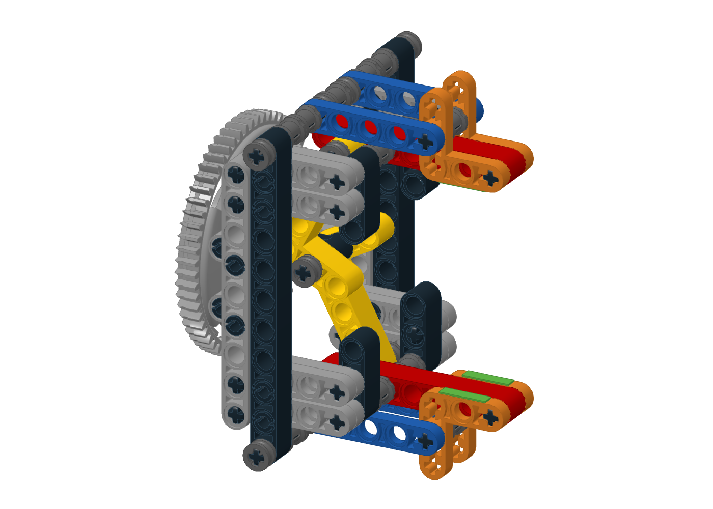


- 主、从动臂的有效孔距均为四孔（32mm）。从动固定轴相对主轴向后两孔、向外一孔；前端两个活动轴保持同样的位置差。
- 主臂前端圆孔绕 2 号轴转动，2 号轴固定在L 梁底角的十字孔中。从动臂两端是十字孔，其前端 3 号轴在L 梁朝外一边的中间圆孔中转动。
- 塑料底边自由间距约 56.52mm；上下各一对垫片在夹紧方向总共占 0.8mm，含垫间距约 55.72mm。夹住 56mm 魔方时，每侧名义压缩约 0.14mm。
- 每片L 梁贴一条 12.8×3.2mm 垫片，含胶总厚度 0.4mm；每个夹块共两条，中间留出粗主臂位置。模型的压缩量不能直接换算成夹紧力。
轴向分层 · 输入关节按上下镜像安装
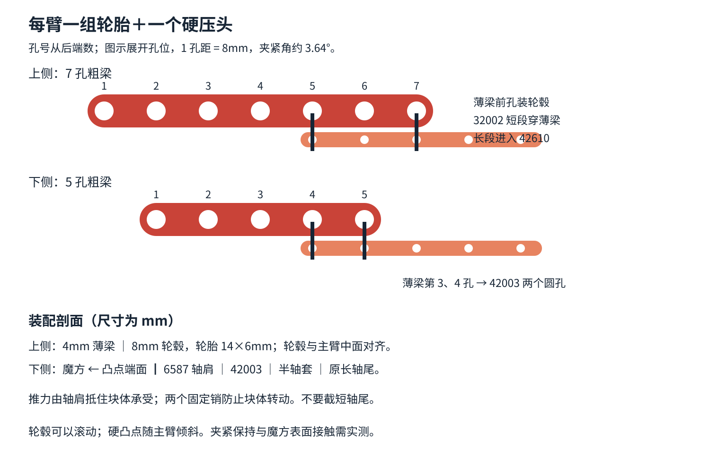
主轴用 7 号轴，端头与外侧横梁齐平。横梁端部十字孔固定轴，粗主臂居中，两侧各用一个整轴套定位；不要再在主轴外端加轴套，否则会占用相邻机械手的转动空间。
从动根轴用 10 号轴，两侧各有两个整轴套填满从动臂与后支架之间的空档。前端 2 号轴与L 形夹块外侧齐平，3 号轴与从动薄梁外侧齐平，由十字孔固定，不能任意加长。
可旋转模型
拖动旋转、滚轮缩放、右键平移；拖动滑块按步骤查看。用本地 HTTP 服务打开此页面以加载模型。
零件清单
按当前模型自动统计，不分颜色。单模块列不含整机公共底座；整机列包含底座、四个马达、四个舵机和八对非乐高接触垫（共 16 条）。
| 零件 | 编号 | 单模块 | 整机 | 45680 已计数量 | 扣除后补充 |
|---|---|---|---|---|---|
| 5 孔薄梁 (两端十字孔) | 11478 | 4 | 16 | 0 | 16 |
| 60 齿转盘 上半 | 18938 | 1 | 4 | 2 | 2 |
| 60 齿转盘 下半 | 18939 | 1 | 4 | 2 | 2 |
| 摩擦销 (2 孔长) | 2780 | 50 | 252 | 80 | 172 |
| 角度连接器 1 号 (一头十字孔, 一头横圆孔) | 32013 | 1 | 4 | 0 | 4 |
| 5 孔薄梁 (圆孔) | 32017 | 1 | 4 | 0 | 4 |
| 带挡套长销 (3 孔长, 红色) | 32054 | 2 | 8 | 12 | 0 |
| 3x3 L 形薄梁 | 32056 | 4 | 16 | 4 | 12 |
| 2 号轴 | 32062 | 14 | 56 | 0 | 56 |
| 半轴套 | 32123a | 23 | 92 | 0 | 92 |
| 15 孔粗梁 | 32278 | 2 | 16 | 6 | 10 |
| 5 孔粗梁 | 32316 | 3 | 12 | 8 | 4 |
| 4 孔薄梁 (两端十字孔) | 32449 | 16 | 64 | 0 | 64 |
| 3 孔粗梁 | 32523 | 5 | 20 | 10 | 10 |
| 7 孔粗梁 | 32524 | 4 | 16 | 6 | 10 |
| 11 孔粗梁 | 32525 | 3 | 12 | 6 | 6 |
| 3x5 L 形粗梁 | 32526 | 2 | 12 | 10 | 2 |
| 24 齿直齿轮 | 3648b | 1 | 4 | 0 | 4 |
| 4 号轴 | 3705 | 1 | 4 | 0 | 4 |
| 12 号轴 | 3708 | 1 | 4 | 0 | 4 |
| 轴套 | 3713 | 17 | 68 | 0 | 68 |
| 10 号轴 | 3737 | 2 | 8 | 0 | 8 |
| 15x11 大框 (45680 套装) | 39790 | 0 | 4 | 4 | 0 |
| 9 孔粗梁 | 40490 | 4 | 16 | 8 | 8 |
| 2 孔细梁 (两端十字孔) | 41677 | 1 | 4 | 0 | 4 |
| 2 孔粗梁 | 43857 | 4 | 16 | 0 | 16 |
| 7 号轴 | 44294 | 3 | 12 | 0 | 12 |
| 3 号轴 | 4519 | 7 | 28 | 0 | 28 |
| 90° 弯角销连接器 3x3 (带 4 个销) | 55615 | 2 | 12 | 0 | 12 |
| 轴连接器 (光面, 两头十字孔) | 59443 | 1 | 4 | 0 | 4 |
| 7x5 框架 | 64179 | 5 | 20 | 8 | 12 |
| 十字块 1x2 (十字孔 + 圆孔) | 6536 | 1 | 4 | 0 | 4 |
| 长摩擦销 (3 孔长) | 6558 | 5 | 28 | 36 | 0 |
| EV3 大马达 | 95658 | 1 | 4 | 0 | 4 |
| Geekservo 舵机 (灰色, 270°) | geekservo | 1 | 4 | 0 | 4 |
| 接触垫一对 (每条 12.8×3.2×0.4mm, 含胶, 非乐高) | jaw_pad | 2 | 8 | 0 | 8 |
套装数量沿用仓库已有清单（大框按用户已有 4 块，32056 按已确认至少 4 片计）；未录入的零件按 0 计，采购前先清点实物。EV3 马达已有 2 个，因此实际还需 2 个。
01 · 底座


4 块 15x11 大框 (45680 套装里的) 摆成十字形, 每块的长边朝外, 靠里的短边就是竖墙的位置, 相对两块的短边相距 24 个孔; 大框偏在长边中线的一侧半个孔 (看图)。大框下面垫 15 孔梁, 梁贴着桌面: 每块大框的两条长边下面各一根: 长边上的竖孔是隔一个一个的, 最靠里的 4 个竖孔各插 1 个销, 其中马达那一侧长边的第 2、3 个用蓝色长销 (1 孔长的一段朝下插进梁, 上面露出 1 孔, 以后接马达底块; 看图), 其余用摩擦销, 梁的一头伸出大框、到角上 (伸出多少看图)。相邻两块大框的梁在角上一横一竖挨着, 最后在角上 (和大框同一层) 放一根 3x5 L 形梁, 拐角对准横梁末端的孔, 4 个摩擦销 (每根梁 2 个)。四个角做法一样。
02 · 竖墙


三块 7x5 框架竖着上下对齐, 相邻长边各用 3 个摩擦销穿侧孔连起来, 拼成一面 7x15 的墙。
03 · 马达底块


马达平放、底面朝上 (底面就是本体最下面、离输出盘最远的那一面), 底面上一排 3 个销孔。3 个孔各插 1 个摩擦销, 压上一根 5 孔粗梁 (梁的第 2、3、4 个孔扣在这 3 个销上); 再在这根梁两头 (第 1、5 个) 的孔各插 1 个摩擦销, 压上第二根 5 孔粗梁, 两根梁对齐叠在一起。
04 · 马达前梁


马达靠输出盘那一侧, 输出盘下面有一段缩进去 2 个孔深的 "颈部", 上面一竖列 3 个横穿马达的孔 (两个圆孔夹一个十字孔)。先在上圆孔插 1 根蓝色长摩擦销 (1 孔长的那段插进马达, 挡肩贴住颈部), 下圆孔插 1 个摩擦销; 把一根 3 孔粗梁竖着压到这两个销上。再在 3 孔梁中间的孔插 1 个摩擦销。然后把两根横梁压上去, 都朝竖墙的方向伸出: 11 孔粗梁的第 1 个孔扣在蓝色长销上, 7 孔粗梁的第 1 个孔扣在中间的摩擦销上。
05 · 齿轮


7 号轴从这一面插进马达输出盘中间的十字孔, 一直推到底: 输出盘的十字孔是贯通的 (马达两面都有输出盘), 轴的另一头和马达另一面的输出盘基本平齐 (只露出不到 1 mm)。这样马达里占 3 个孔长, 外面露出约 4 个孔长。然后依次套上 2 个半轴套、1 个轴套、24 齿直齿轮, 最前面再套 1 个半轴套, 正好套到轴头。
06 · 装马达

在两根横梁上对准竖墙框架正面孔的位置插摩擦销: 11 孔梁 3 个 (接最上面那块框架), 7 孔梁 1 个 (从马达数第 6 个孔, 接中间那块框架)。把整个马达组件平推到竖墙背面, 4 个销同时插进墙上的孔。马达底块的下表面和竖墙的下边平齐。装机械头时 24 齿齿轮和转盘上半的齿啮合 (两轴相距 5 个孔, 齿轮背面和转盘背面平齐; 24 齿是实测咬合最好的)。
07 · 转盘下半


60 齿转盘的下半 (没有齿): 底部的长方形凸台从正面 (朝魔方的一面) 塞进最上面那块框架的开口, 长边沿框架的长边, 圆盘的边沿贴住框架正面。然后从转盘中孔里面插 2 根红色带挡套长销: 把销平放进凸台里面 (凸台两端壁之间正好放下一根, 很紧), 再往外推, 销穿过凸台端壁插进框架短边, 挡套留在凸台里面。一根用上排孔, 另一根用另一头的下排孔 (同一排两根的挡套会互相挡住)。
08 · 装竖墙

竖墙和马达现在是一个整体, 一起竖着往下压到底座上: 竖墙立在大框靠魔方的那条短边正中, 墙面朝魔方; 马达底块压在大框的长边上。先在大框短边上插 2 个摩擦销 (对准墙底边的侧孔); 长边上第 1 步插的 2 根蓝色长销露在上面, 正好对准马达底块下层梁的第 2、4 个孔。然后整体对准压下去。
09 · 舵机平台

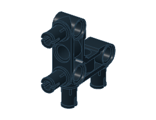

两根 15 孔粗梁平放、平行, 相距 4 个孔。一块 7x5 框架平放压在两根梁的前段上 (框架前端和梁前端对齐), 6 个摩擦销竖着连起来 (框架正面孔: 一根梁 4 个, 另一根梁靠前的 2 个孔各插 1 个, 靠后的 2 个孔留给导向框架的长销)。梁的后段上面, 舵机那一侧压一根 7 孔粗梁当舵机垫块: 从平台后端向魔方数, 第 1、3、5 孔用 3 个黑色摩擦销接下面的 15 孔梁; 第 2、6 孔留给舵机耳朵的蓝色长销; 第 4、7 孔不插销。第 2、4 孔下方梁孔由 55615 占用, 第 2 孔的蓝销短端只进入垫梁, 不能贯穿下面的梁。两根梁的最后一个孔上横压一根 5 孔粗梁, 2 个摩擦销, 让后段也连成封闭的长方形。两根梁后段的下面各挂一个 55615 (90° 弯角销连接器): 横臂顺着梁、竖臂朝下, 横臂上朝上的 2 个销从下面插进梁孔: 马达那一侧的梁插倒数第 2、4 个孔; 舵机那一侧的梁插倒数第 3、5 个孔 (倒数第 5 个孔就在垫块空着的第 4 个孔正下方); 竖臂上的 2 个孔朝外 (朝平台两侧)。平台前段上面竖立一块框架当推杆导向: 它长边沿推杆方向, 框架比原版后移两孔, 底边用 2 根蓝色长摩擦销竖着插进平台: 1 孔长的一段朝上插进导向框架, 2 孔长的一段穿过平台框架, 一直插进下面那根 15 孔梁; 原来最前面的蓝销改为黑销, 只连接平台框架与下方梁。导向框架两条短边上正中的侧孔 (圆孔) 就是推杆的两个轴承。
10 · 舵机


舵机平放在平台后端的垫块上, 输出轴朝推杆那一侧。2 根蓝色长摩擦销从上面插进舵机两只耳朵, 1 孔长的那段朝下插进垫块第 2、6 孔 (从平台后端向魔方数), 避开垫块的 3 个黑色摩擦销。
11 · 装平台


先在大框后短边 (离竖墙最远的那条短边) 上放一个 55615: 横臂顺着短边, 朝下的 2 个销插进短边第 1、2 个竖孔 (从马达那一侧数, 看图), 竖臂朝上, 竖臂上的 2 个销朝马达那一侧。然后平台前端顶住竖墙背面, 2 个摩擦销沿推杆方向穿进墙的孔。检查导向框架的两个轴承孔、转盘中孔在一条直线上。最后装两根竖梁 (9 孔粗梁), 都从外侧压上去: 马达那一侧, 先在平台下 55615 的 2 个孔里插摩擦销, 竖梁上端 2 个孔套这 2 个销、下端 2 个孔套底座上 55615 的 2 个销; 另一侧, 在平台下 55615 的 2 个孔和大框长边外侧的侧孔 (看图) 各插 1 个摩擦销, 竖梁压上去, 下端最后一个孔接大框。
12 · 十字块和舵机连杆

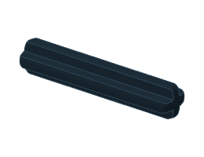

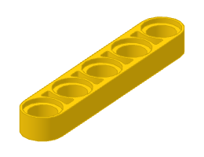

十字块圆孔在上, 放进导向框架的开口里, 圆孔对准推杆轴承孔; 两侧各放一个半轴套, 推杆后面穿入。3 号轴穿过十字块下面的十字孔: 背离舵机的一端露半孔, 套一个半轴套; 朝舵机的一端露一孔半, 依次套半轴套、黄色 5 孔圆孔薄梁 32017、半轴套。图示是最终夹紧位置, 首次装配先让薄连杆的曲柄端脱开。按单臂标定步骤, 用 servo 1500 空载定位, 断电后在行程中间调整曲柄方向并连接。曲柄端用 3 号轴, 轴头与曲柄外侧齐平, 穿过薄连杆后只套一个半轴套。保留朝推杆一侧的细轴余段, 不在那里再加第二个轴套。不要换回粗连杆加两个半轴套的叠法, 该叠法在松开时会蹭旋转推杆。连接后手转推杆核对间隙。不要带连杆直接首次定位, 也不要硬拉连杆对孔。
13 · 后部夹指架
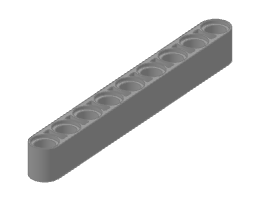
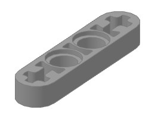


两侧各做一套支架。后列为 9 孔粗梁, 前列为 11 孔粗梁, 两根中心对齐, 沿推杆方向相隔一孔。在中心上、下第 3 孔和第 4 孔的位置各装一组横梁: 每组由两根 4 孔薄梁 32449 贴合, 位于竖梁内侧。横梁后端十字孔用 2 号轴接 9 孔竖梁, 从后数第 2 个圆孔用黑销接 11 孔竖梁。横梁继续向魔方伸出两孔, 前端十字孔留给主轴座。
14 · 前端主轴座

两侧各加上、下两根 3 孔粗梁, 贴在横梁内侧。中孔用 2 号轴接靠中心的横梁前端十字孔, 外端孔暂时留空, 随后由主摆臂的贯穿轴固定。先完成上一页后部支架, 再从内侧放上这四根短梁并穿轴。
15 · 转盘连接短梁
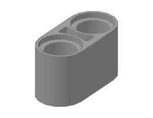

在每侧后部 9 孔竖梁的中心上下各一孔处, 从内侧装一根 2 孔粗梁。短梁沿推杆方向向后伸出一孔, 前端用黑色摩擦销接竖梁, 后端留给转盘安装耳。先完成这一页, 再安装转盘。
16 · 转盘上半


转盘有齿的一面朝后。两只安装耳各插两个黑色摩擦销。再把两套侧架从左右压上去, 2 孔连接短梁的后端圆孔对准转盘安装耳上的销。
17 · 主摆臂


每片夹指改用一根 7 孔粗梁 32524。从后端数第 2 孔接输入连杆, 第 3 孔为主转轴, 第 7 孔接前端夹块; 最后面的第 1 孔留空。7 号轴穿过两侧主轴座和横梁。粗梁居中, 左右各放一个整轴套, 再穿过 3 孔主轴座和两片 4 孔薄横梁。横梁端部十字孔固定轴, 粗梁的圆孔绕轴转动。轴端与横梁外侧齐平, 不加外侧轴套。
18 · 平行从动臂
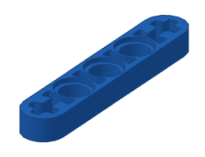
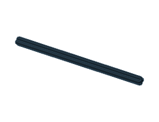

每片夹指装两根 5 孔薄梁 11478, 两端为十字孔。根部装在后列 11 孔支架的最外端孔, 使用 10 号轴。相对主轴, 从动轴向后两孔、向外一孔。沿轴从中央往两边依次为: 中央整轴套的半边、半轴套、蓝色薄梁、两个整轴套、11 孔支架、外侧半轴套。轴随蓝色薄梁一起转, 在支架圆孔里转动。
19 · 平行夹块
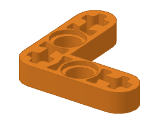

每个夹块用两片 32056（3x3 L 形薄梁）分列粗主臂两侧, 中间留一孔厚的空档。L 的一边沿推杆方向, 另一边在后端朝夹指外侧伸出。不能再用 2905 三角梁, 其后端会撞主根轴和轴套。先将两片 L 梁从前端滑入红色粗主臂与蓝色薄从动臂之间的空档, 再穿前端两根轴。靠魔方一端的端部十字孔用 2 号轴连接红色粗主臂前端圆孔, 轴端与 L 梁外侧齐平。L 梁朝外那一边的中间圆孔用 3 号轴连接蓝色从动臂前端十字孔。两片 L 梁之间放一个整轴套, 蓝梁贴在 L 梁外侧, 轴端与蓝梁外侧齐平。这里轴固定在蓝梁里, L 梁绕轴转动。L 的拐角和朝外末端十字孔留空。装完后手动开合, 夹块接触边应始终平行。
20 · 接触垫
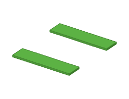

在每片 L 形薄梁朝魔方的平直边各贴一条薄弹性垫, 图中按含胶总厚度 0.4mm 表示。每条垫片尺寸 12.8×3.2mm, 沿底边从前端孔向后 1.6mm 开始贴, 不包住转轴或伸到相邻层。厚度和压紧量以实测为准; 先手动确认夹块能贴平, 再标定闭合位置, 不用加大舵机行程去硬压塑料。
21 · L 形输入连杆
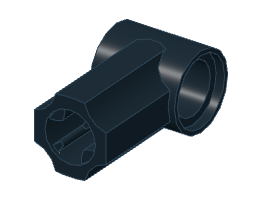
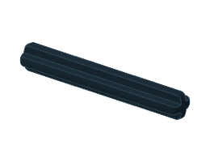
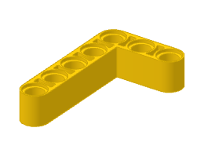

上下各用一根 32526（3x5 L 形粗梁）。长边远离拐角的末孔接红色主臂从后数第 2 孔; 短边中孔（从拐角数第 2 孔）接十字接头。短边的拐角孔与末孔留空。上下两根按图镜像安装。先不穿轴: 保持图示朝向, 从两夹指之间的空档放入 L 梁, 向后移到接头位置, 再向对应主臂平移对孔。两根梁就位后再穿轴, 不要越过主根轴硬推。十字接头圆孔穿 4 号轴: 接头居中, 两侧直接贴 L 梁, 最外侧各放一个半轴套。这里不再放接头与连杆之间的半轴套。L 梁另一端直接贴粗主臂外侧, 用 3 号轴穿过两根粗梁, 两端各一个半轴套。原 4 号轴、内侧半轴套和背面的整轴套不沿用。两处都要转动顺畅, 半轴套贴近但不要挤紧。有效孔距和开合行程保持原值; 不用改变前端夹块角度。
22 · 推杆
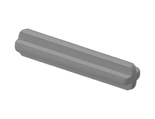
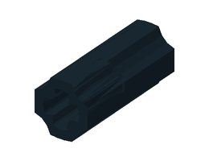

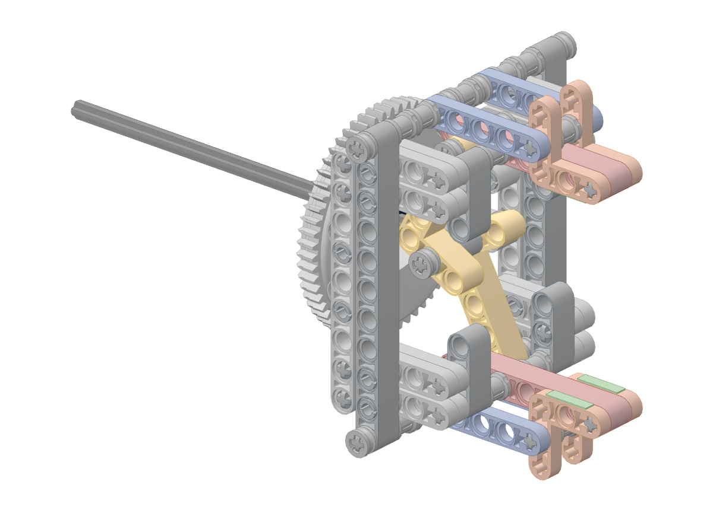
推杆用 3 号轴 + 光面轴连接器 + 12 号轴接成 15 孔长: 3 号轴的一端插进十字接头到底, 另一端插进连接器半长, 再把 12 号轴从另一头插入到底 (两根轴在连接器中间顶住)。3 号轴中间有一孔露在外面, 不要强推连接器去贴十字接头。
23 · 装机械头
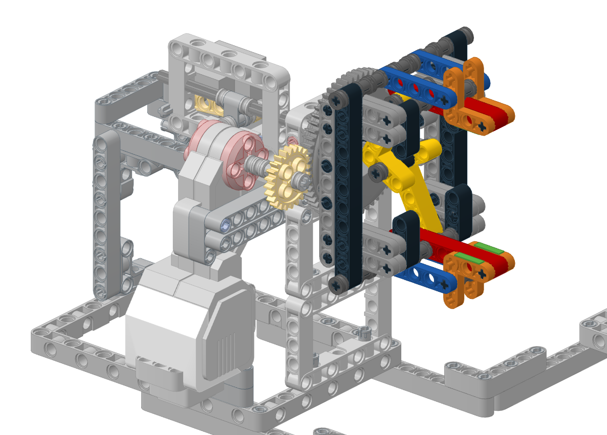
推杆从转盘下半的中孔往后穿, 依次穿过导向框架前面的轴承孔、半轴套、十字块、半轴套、后面的轴承孔。转盘上半对准下半扣上 (两半本身卡在一起, 不用销)。安装全程断电, 舵机曲柄与黄色连杆暂不连接。先让推杆和夹指在无负载下平顺活动, 十字块两边半轴套不要夹得过紧。随后按 docs/single_arm.md 第 3 步进行空载定位、中间位置连接和小步标定。确认夹紧位置后再断电调整十字块在推杆上的位置, 以接触垫轻微压缩、夹块保持平行为准, 并将两侧半轴套贴近十字块。前端弯梁连杆不要求与推杆垂直。图示是标称夹紧状态。实物夹紧力、厚度和销孔间隙仍需单臂验证, 不能用舵机强推对孔。
24 · 装另外三个机械手
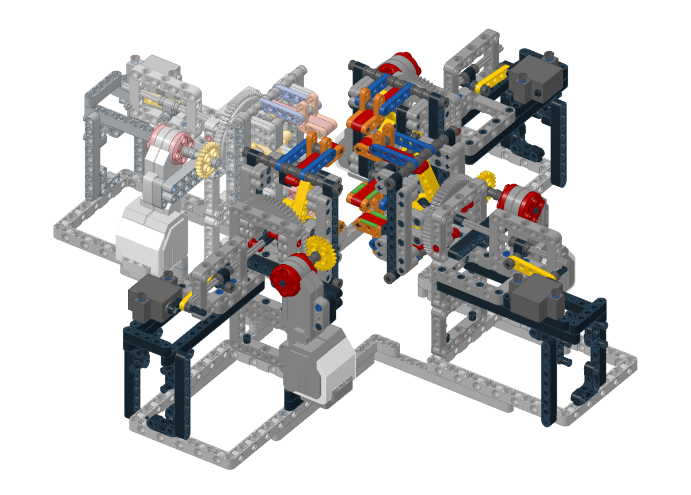
照上面的步骤再做三个一样的机械手, 装到底座的另外三排上。四根推杆的轴线都过魔方中心, 两两垂直 (底座的孔位保证了这一点, 不用调)。
25 · 放入魔方

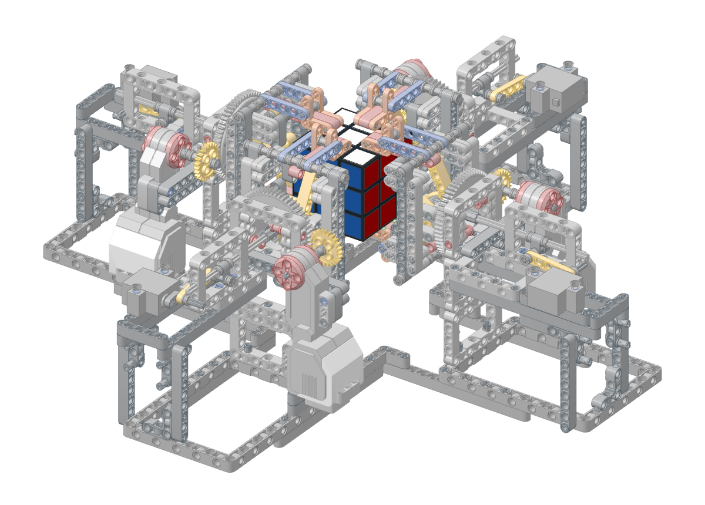
四个舵机都转到 "松开", 四个机械手都转到竖直 (夹指一上一下)。魔方放在中间, 先夹紧 L、R, 再夹紧 F、B。
检查结果与实物标定
| 项目 | 范围 / 结果 |
|---|---|
| 连接、销孔类型、插深和装配顺序 | 单模块与整机检查：0 个问题 |
| 夹指中间行程 | 检查闭合、张开及中间位置，无报告干涉 |
| 四臂转动 | 0°～355°，每 5° 扫描，覆盖夹紧/松开与相邻臂状态；邻臂竖直时无报告干涉 |
| 拧层扫掠 | 按完整一层厚度 56/3mm，邻臂夹紧竖直：采样余量约 7.4mm |
| 整块翻转扫掠 | 邻臂松开竖直：采样余量约 1.4mm |
| 运动学与本臂转动回归 | 7 项测试通过，含实件孔位闭环、关节类型、预压、舵机行程、本臂齿轮轴和扫掠范围 |
检查按 LDraw 几何采样，包含本臂固定件与相邻臂，不模拟孔隙、受力变形、摩擦或连续碰撞。相邻机械手不能同时转到水平；转动时相邻机械手保持竖直且静止，规划时使用 --no-adjacent-horizontal。

先搭一只机械手验证
- 断电并脱开舵机曲柄与连杆，手推检查全行程。夹块应保持平行，连接轴不窜动。
- 按 单臂标定步骤空载定位舵机，在行程中间断电连接，再以 10～20µs 小步标定。
- 闭合端以夹块贴平、垫片轻微压缩为准，再断电调整推杆十字块位置，使后端舵机曲柄与连杆接近拉直。前端弯梁不与推杆垂直。
- 开端参考推杆 6.10mm、舵机曲柄约 70.4°。旧版脉宽不能直接沿用，不通过强推去追求理论角度。
- 先测试手动拧其他层不打滑，再低速转到水平停留 10 秒。观察主轴、从动轴、L 形夹块与后架有无晃动。最后逐步测试连续翻转。
若需要更厚的垫片、更大张开角或更长轴，修改模型后重新检查四臂间隙。夹紧效果尚未经过这套新结构的实物测试。